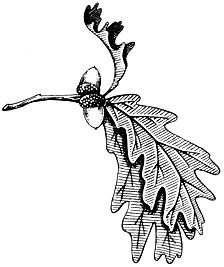
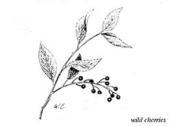
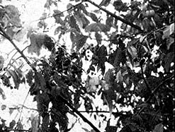
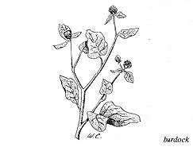
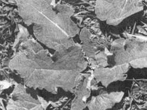
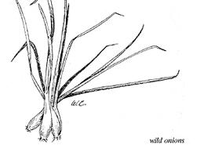
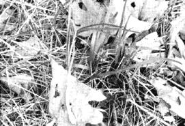

July and August are very productive months for the wild food forager and almost everything that produces edibles has something to offer at this time of the year. True, the greens are a little tough but trimmed chicory and dandelion are good all summer.
The cattail, too, has white salad material in the stem bases and-in some areas-the new cattail itself is still green and hard. Green cattails make a good substitute for Zucchini squash if it's baked for a few minutes at 350° and then swabbed with melted bacon grease.
Blueberries and huckleberries ripen in mid-summer and, of course, blackberries and raspberries are also at their delicious best. We like to pick berries and our whole family turns out to fill pail after pail.
A special treat which July gives us are wild cherries and Juneberries (or shadberries). Near our camp in Northern Wisconsin is a 25-acre ridge that is a virtual Juneberry orchard. Hundreds of water pails wouldn't hold the crop from this one ridge in an average year . . . and not far away are a dozen pin cherry trees that yield red, sweet, delicious cherries as large as the end of your little finger.
Picking Juneberries and pin cherries is more fun than work. Both can be stripped from their branches by sliding the fruitfilled twigs between the thumb and forefinger almost like milking a goat.
Down here in southern Wisconsin another fruit also ripens on trees and is at its best right now: the sweet and delicious black cherry and choke cherry. Picking black cherries is best accomplished by spreading a canvas or other cloth under the tree and shaking the limbs with a pole that has a branch hook wired to its end.
Mid-summer is also the time to harvest a large rhubarb-like plant that grows up in rich soil over the temperate regions of the nations; Wild Gobo or Great Burdock. And we musn't forget Wild Onions, either!
I'm getting hungry just thinking about all this foraged fare so let's get down to specifics about these foods.
As I mentioned before, picking Juneberries (Amelanchier Canadensis) from the trees in northern Wisconsin is no great chore. They usually grow so thick they can be stripped from the branches in handfuls. The berries go through three stages. First they're green (and of course inedible), next they turn red (and in the latter red stages they're sometimes very good and juicy) and-finally-the berries reach a final blue ripe stage. Usually we pick them as they purple from red to blue.
People aren't the only creatures that like Juneberries. One year we had severe competition from a family of two cubs and a sow black bear who practically lived in our Juneberry orchard. We didn't really mind if the bears ate all the berries they wanted but their eating habits are downright destructive to the trees. Bears climb out on limbs until the limbs bend to the ground whereupon another bear may grab a branch and break it off. We finally had to have our Labrador retriever chase the bears to another area where they no doubt found a Juneberry orchard without people and dogs.
Juneberries make very good pie, jam, jelly, fresh fruit ice cream topping, shortcake and drinking juice.
After we gather a supply of Juneberries we winnow the berries by pouring them from pail to pail in a light breeze. This blows away the twigs and leaves. We then drop the berries-a few at a time-into water to float. away whatever impurities might remain.
Make Juneberry pie sifting together two cups of white flour or whole grain wheat flour and one teaspoon of salt. Cut in 2/3 cup shortening until the particles are the size of small peas and sprinkle five to six teaspoons of cold water over the mixture. Toss lightly with a fork until dough is moist enough to hold together.
Divide the dough into two balls and roll one out into an 11-inch circle. Loosely cover the bottom of a 9-inch pie tin with this circle and fill the dough-lined tin to a slight heap with washed Juneberries.
Mix 3/4 cup brown sugar, 1/4 cup flour and a scant teaspoon of salt. Sprinkle this over the berries and dot with butter. Roll out the rest of the dough, spread over the berries, poke a few holes in the top dough and bake the pie for 10 minutes at 425°. Turn oven down to 350° for another 30 minutes or until crust is golden brown.
A second Juneberry recipe which tastes something like pie but is quicker is Juneberry Crunch. Combine one pint of fresh, washed, ripe Juneberries with two tablespoons of any kind of flour. Add 1/4 teaspoon salt, 1/2 cup brown sugar and two tablespoons lemon juice and spread this mixture in the bottom of a well greased 9-inch pie tin.
Further combine one cup sifted flour, one cup steel-cut oatmeal, 1/2 cup brown sugar, 1/2 teaspoon salt and I/2 teaspoon vanilla. Cut in 1/2 cup butter until mixture forms small lumps and sprinkle lumps over Juneberry mixture. Bake in moderate oven 30 to 40 minutes.
I also would like to pass on our Juneberry Cake recipe. Sift two cups sifted flour with 1/2 teaspoon salt, one teaspoon soda and 1-1/4 cups brown sugar. Add 1/2 cup shortening, 1/2 cup sour cream, three eggs and one teaspoon of vanilla. Beat for five minutes. Mix in one cup crushed and sweetened Juneberries and pour into well greased and lightly floured 12x8x2 cake pan and bake in 350° oven 40 to 45 minutes. Serve with more crushed, honey-sweetened Juneberries.
Drinking juice is made from the berries by barely covering a quantity and simmering them for 20 minutes over a low fire. Strain through jelly bag, sweeten to taste . . . cool and drink.
Juneberry jelly is a beautiful sight. Make it by extracting the juice as above and combining one box commercial pectin to 3 1/2 cups juice. Place over fire and bring to a rolling boil. Add an equal amount of raw sugar. Bring to a high boil again and hold for one minute. Skim off foam with a metal spoon and quickly pour into sterilized jelly jars. Seal with paraffin.
Make Juneberry jam by crushing the berries and adding one box commercial pectin to 3-1/2 cups whole, crushed fruit. Bring to a boil and add equal amounts of raw sugar. Bring to a boil again. Hold boil for one minute. Stir, skim and cool until foam is all gone and ladle into sterilized jars. Seal with paraffin.
If you have some Juneberries left over, freeze or can them for winter. They can be frozen in a sugar syrup made by combining one part brown sugar to three parts water. The berries can also be frozen dry by placing them in a freezing container with a teaspoon of brown sugar over each cup of berries.
Can Juneberries by filling pint sterilized jars to within one inch of the top with washed, ripe fruit. Make light syrup by boiling 2/3 cup brown sugar and 1-1/2 cups water. Pour this syrup over berries in jar to barely cover them. Seal with sterilized lids and process in canner by bringing to a boil and holding for 30 minutes. Cool on thick toweling.
Pin cherries (Prunus Pennsylvanica) often grow very near Juneberries and ripen at about the same time. They taste almost like sour cultivated cherries to me.
Pin cherries vary in quality greatly and sometimes they're exceptionally small and don't seem to be much more than a thin skin stretched over a hard seed. In other places, like the southern tier of counties in the upper peninsula of Michigan there are many pin cherry trees with large, almost-sweet cherries full of juice and pulp. We gather ours from this area and time our trip so we arrive there about the 4th of August or a little later. Sometimes we camp near a concentration of pin cherry trees and render out a few gallons of juice for winter while we take advantage of the good fishing and wonderful climate the upper peninsula offers this time of year.
Pin cherry juice is extracted in the time-honored way of placing the cleaned cherries in a kettle and covering them with water. Simmer for about 20 minutes or until the fruit is pale, withered lumps and the water bright red. If you taste this extract, you'll quickly notice that there's nothing quite as sour as pure pin cherry juice! Extract the juice with a jelly bag or strain it through cheesecloth right from the cooking kettle.
Pin cherry jelly is made by combining 3-1/2 cups juice with one box of commercial pectin. Bring to a boil and quickly add 1-1/2 pounds raw sugar. Bring to a boil again. Hold for one minute. Pour in sterilized jelly jars. Seal with paraffin.
Pin cherry pie tastes exactly like domestic sour cherry pie to me, the only handicap being separating the seeds from the pulp. I do this by pinching the cherries between the thumb and forefinger until the seed pops out. A cherry pitter will work also and I suppose the cherries could be cooked first and the seeds spooned out of the mixture. Still, I don't know of a really good way to separate the seeds from small wild cherries. If any reader has a method that works I would be glad to hear about it. Just drop MOTHER a note.
Pin cherry pie is made by combining three tablespoons corn starch, 3/4 cup brown sugar, 1 /2 teaspoon salt and one cup of cherry juice. Combine ingredients in a saucepan and cook over medium heat. Stir constantly until mixture thickens and boils. Then add two tablespoons margarine, two pints of pin cherries and two teaspoons sumac juice or one teaspoon lemon juice and pour mixture into a 9-inch pie tin that has been lined with dough. Cover with top crust, perforate and bake in a 425° oven for ten minutes. Turn oven to 350° and bake for another 30 minutes or until crust is golden brown.
Pin cherry jelly is made by simmering ripe, washed, crushed pin cherries in a little water for ten minutes. Strain the juice through a jelly bag and use the directions in the commercial pectin package for sour cherries. This jelly is a beautiful red.
Juice extracted from the pin cherry-either cooked or uncooked-makes a darn good drink. Mix it half and half with apple juice or grape juice and sweeten to taste. Nothing wrong with it straight either.
I had the privilege of tasting pin cherry wine once and it has never left my memory. I don't know the exact recipe used but I think it goes something like this: crush eight pounds of pin cherries enough to break the skins and place in a stone crock. Add four quarts of water. Boil this water first and while it's boiling dissolve in nine cups of raw sugar. Cool and pour the water and sugar over the cherries.
Dip out a cupful of the mixture and dissolve one package of dry yeast in it. Pour the yeast mixture in the crock, cover the crock with a cloth and let it work for about ten days. Next, strain the wine into another crock or into gallon jugs and cap lightly with cotton or cloth. Leave for about one month.
After a month, siphon the wine into bottles, cap tightly, wrap with opaque paper and store in a cool, dark place until you're thirsty. Don't get so interested in pin cherry wine, though, that you neglect the finest cherries of all that fruit this time of year: the sweet black cherry.
Black Cherry (Primus serotina) trees are frequently found growing along roads and in rich fence rows and woods. The cherries are ripe when they are very black and soft. They go through a red stage also and they can be used for jelly then but they are at their incomparable best when they're ripe enough to shake off the trees into a canvas below. One handicap in picking black cherries is the considerable altitude at which they are sometimes found growing. A lady from Cabot, Vermont has written me that it took her and her two boys most of the afternoon to gather enough for jelly.
I solve this problem by spreading a canvas under the tree and then whacking away at the berry-filled branches with a stick until the ripe berries fall into the canvas. 1 then simply pick the cloth up and pour the berries into a pail. Thirty minutes of this activity in a good tree will deliver a year's supply of black cherries.
We use black cherries for drinking juice and jelly and extract the juice in the usual way by simmering crushed fruit in a little water for 20 minutes.
Sterilize some pint jars, set them aside and separate the juice by processing it through a jelly bag. The drinking juice is then boiled hard for two minutes and poured quickly into the sterilized pint jars. Seal immediately.
Black cherry jelly is made by adding one box of commercial pectin to three cups of juice. Bring to a hard boil, add four cups of sugar, then bring to a hard boil again and hold one minute. Stir, skim and pour into sterilized jelly jars. Seal with paraffin.
Choke cherries (Prunus Virginiana) are a good cherry for jelly. Make it by adding half apple juice to half choke cherry juice and following the directions on the commercial pectin package.
The Sault Ste. Marie, Ontario, Canada area has the biggest juiciest choke cherries I've ever seen but in our region they're small and bitter and I haven't used this fruit much except for jelly or eating raw. A lady in Canada told my wife that they use choke cherries for jam, jelly and preserves. Perhaps some reader from up that way would care to send along pointers on making jams or preserves from this fruit. I have no doubt that choke cherries could be mixed with the rather bland blueberries to produce some good preserves.
Often while picking cherries I see a large-leafed, stout-stalked, rhubarb-like plant growing in areas of rich, moist soil. This is the Great Burdock (Arctium lappa) and I get as much good as I can from the plant before it turns into a mass of burrs that tangle in my dogs' coats.
When great burdock is small it makes pretty good boiling greens. Let the leaf stalks lengthen to about a foot long and they can be peeled and served as salad or cooked and treated like asparagus. At just the right time of year (early July in our area) the roots of the first year of this biennial plant can also be dug, peeled and cooked as a vegetable.
One of the nicest things about a burdock is that it grow thickly and has a considerable vegetation. Only a few minutes of picking will fill a kettle full of greens and stems.
Greens are prepared by boiling the leaves and very young stems two to five minutes in lightly-salted water. Serve with melted butter, salt and pepper. Older plants may have to have the water changed once to reduce the bitterness.
Peel the young stems (be sure to remove all the bitter rind) and cook them in two waters, also. Serve with melted butter. The young leaf stems can be par-boiled and used as a vegetable for soups or as side dressing for meat.
The roots of the burdock are a good vegetable also . . . the hurdle is gathering enough for a meal. I know of a considerable patch that grows in loose peat soil and another that grows near our chicken house in hard clay. The roots in the peat soil can be dug anytime. The roots in the hard clay are almost impossible to dig except after a long soaking rain . . . they're definitely the best quality, however, and we use them when we can. We peel and slice the big ones and chop them into four-inch pieces.
The quality of burdock roots is controlled by the age of the plant, the soil balance and the amount of rainfall and cooking burdock roots is a trial-and-error proposition. Sometimes they're tough, have to be boiled a long time and the water changed to make them palatable. Other times they can be cooked for only, a few minutes and eaten. Either way, the roots are mighty good served hot with butter or gravy.
Two other products of the burdock are the bloom stalk and the green burrs. The bloom stalk is harvested when the flower heads are starting to form. Slice off the flower, peel the bloom stalk and cut the white stem into bite-sized pieces. Boil until tender and serve like the roots.
I once tried pickling the bloom stalk in vinegar water and it made a pretty good pickle after curing for the best part of the summer. The solution was one part cider vinegar to one part water, with a few celery seeds and sage added.
Burdock is a darn good plant and it would pay the wild food forager to make better use of it.
At about the same time that burdock is coming into its own in Wisconsin, another plant is maturing on rich hillsides and in meadows. Wild onions, especially Allium Tricoccum-with their flat grass-like leaves-are one of the first plants to come up in the spring. The bulbs grow to the size of a marble (but longer, of course) and the plants then tower and die.
Onion and dandelion salad is very good, to my way of thinking, and it provides many needed vitamins and minerals in early spring when our system is bleached out from winter's bleak weather. I make this salad by cutting the white crown and very small green leaves of the dandelions into small pieces.
Foragers who read Food Without Farming in MOTHER NO. 3 will recall that the dandelion is tender and mild when it first comes up and that a white, crisp leaf crown grows slightly below the surface of the ground. This crown is a delicious salad material.
After I've gathered a cupful of dandelion leaves and crowns, I pick and chop a good handful of wild onion tops into small pieces and toss them with the dandelion crowns. A little bacon grease is all the dressing I need. The only handicap is that you can't sell anything to anybody for a few hours after eating such a salad.
Wild onions are a good addition to soup, make a fine vegetable boiled alone and are mighty tasty when served as side dressing for meat. Pick and eat a lot of `em. They're too good to waste!
|
 |
 |
 |
|
 |
 |
 |
|
 |
|
|